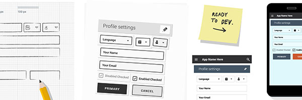

1. Learn by doing. Always play with the code while learning
With every new subject, the sooner you start playing with the code, the faster you will learn the given concepts. Even if you blaze through an entire chapter of reading and a topic like for loops seems straightforward – so a monkey could do it – you’ll still be scratching your head when tasked to implement the code for the first time.
Hint: Build a project as you go through the material. A personal project is often the best starting point.
2. Grasp the fundamentals for long-term benefits
As elementary as they may appear at first, programming fundamentals always need to come first: the better you understand them, the easier it is to learn more advanced concepts.
Hint: Read this great article about the 5 Basic Concepts of Any Programming Language
3. Code by hand. It sharpens proficiency and you’ll need it to get a job
Be it on a whiteboard or notebook, coding-by-hand requires further caution, precision, and intent behind every line of code. Because unlike on a computer, you can’t run hand-written code midway through the sheet to check if the work is correct.
For college exams and technical interviews – a critical component of the job interview process – you will have to code-by-hand, because not only is this good for learning, but it’s universally known to be the ultimate test for a programmer’s proficiency. So start early and get used to this old-school practice.
4. Ask for help. You’ll need it
As awesome as it would be to become the next Steve Jobs on your own, the reality is that people learn faster with mentors and peer feedback. What may seem like an immovable bug or topic could be quickly alleviated by a fresh pair of eyes or a new interpretation of the subject.Whether it’s online or in-person, ignore the trolls and don’t be afraid to ask for help, because every programmer has been in your shoes before. Besides, most developers love to code, and if there’s one thing that passionate individuals enjoy, it’s to share their knowledge with others.
Hint:Stackoverflow gold mines for online programming assistance.
5. Seek out more online resources.
If a particular concept doesn’t make sense, be it on in a textbook, or during class lecture, maintain your confidence and look for alternate online resources to learn the same content. Everyone learns differently, and just because one source doesn’t make sense, doesn’t mean there’s something wrong with you.
The online resources to learn computer programming are endless, and there’s always tutorial, or blog explanation that will make the material-at-hand crystal clear.
Hint: Don’t underestimate the power of search.
6. Don’t just read the sample code.
Reading sample code is not enough to understand how it works. To develop a true understanding, you need to actually run the code and tinker with it. With the additions of comments and instructions, sample code is packaged to be by the reader; but in reality, it’s pretty difficult to replicate from scratch. Reading is not the same as understanding, and actually trying to write the code yourself, or at least running it, will facilitate the learning process much more.
7. Take breaks when debugging
When debugging, it’s easy to go down the rabbit hole for hours, and there’s no guarantee that you will fix the problem. To avoid this, it’s best to step away from the for a few hours, and return with a fresh perspective. In the meantime, the bug won’t be going anywhere, and you’ll at least restore some needed sanity to improve productivity.
Pervious Page